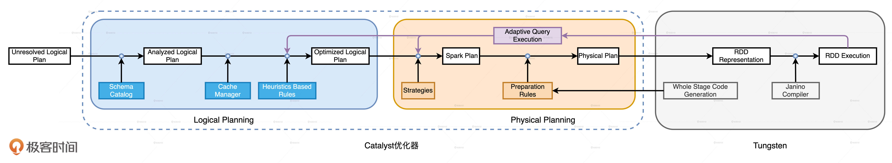
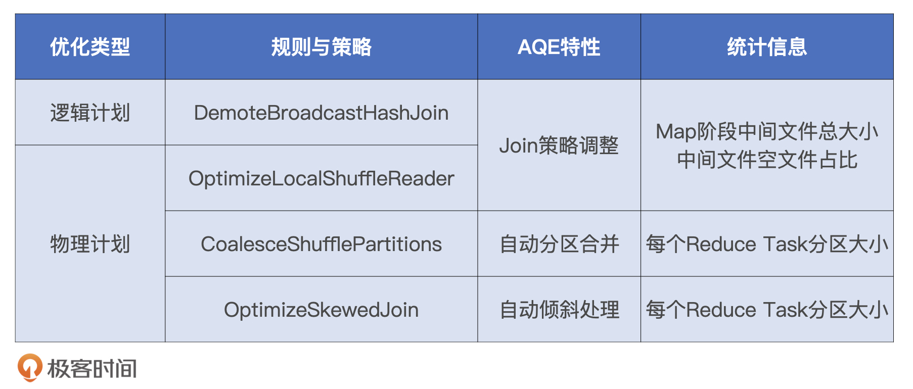
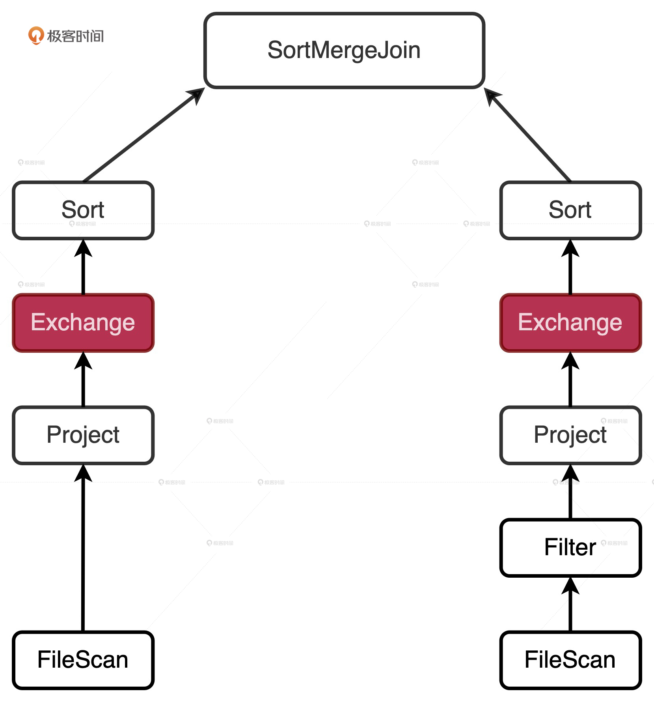
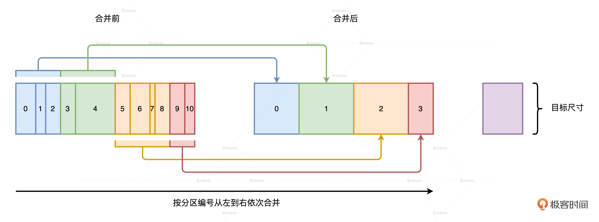
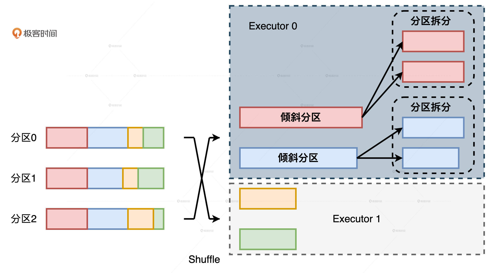
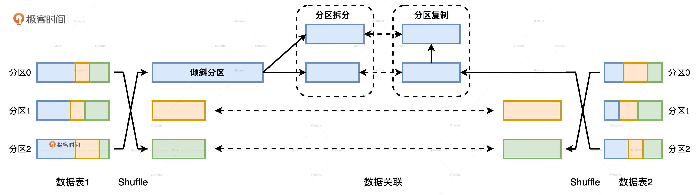
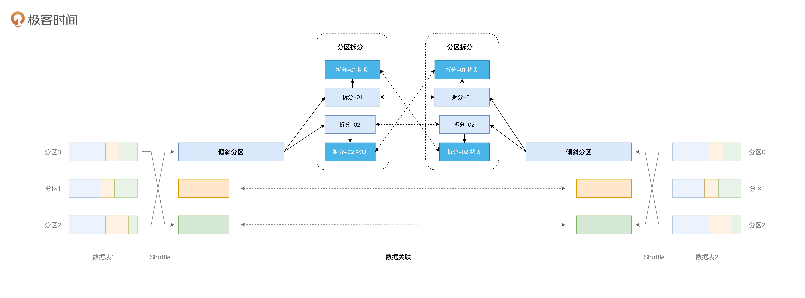

- 00 开篇词 Spark性能调优，你该掌握这些“套路”.md.html
- 01 性能调优的必要性：Spark本身就很快，为啥还需要我调优？.md.html
- 02 性能调优的本质：调优的手段五花八门，该从哪里入手？.md.html
- 03 RDD：为什么你必须要理解弹性分布式数据集？.md.html
- 04 DAG与流水线：到底啥叫“内存计算”？.md.html
- 05 调度系统：“数据不动代码动”到底是什么意思？.md.html
- 06 存储系统：空间换时间，还是时间换空间？.md.html
- 07 内存管理基础：Spark如何高效利用有限的内存空间？.md.html
- 08 应用开发三原则：如何拓展自己的开发边界？.md.html
- 09 调优一筹莫展，配置项速查手册让你事半功倍！（上）.md.html
- 10 调优一筹莫展，配置项速查手册让你事半功倍！（下）.md.html
- 11 为什么说Shuffle是一时无两的性能杀手？.md.html
- 12 广播变量（一）：克制Shuffle，如何一招制胜！.md.html
- 13 广播变量（二）：如何让Spark SQL选择Broadcast Joins？.md.html
- 14 CPU视角：如何高效地利用CPU？.md.html
- 15 内存视角（一）：如何最大化内存的使用效率？.md.html
- 16 内存视角（二）：如何有效避免Cache滥用？.md.html
- 17 内存视角（三）：OOM都是谁的锅？怎么破？.md.html
- 18 磁盘视角：如果内存无限大，磁盘还有用武之地吗？.md.html
- 19 网络视角：如何有效降低网络开销？.md.html
- 20 RDD和DataFrame：既生瑜，何生亮？.md.html
- 21 Catalyst逻辑计划：你的SQL语句是怎么被优化的？（上）.md.html
- 22 Catalyst物理计划：你的SQL语句是怎么被优化的（下）？.md.html
- 23 钨丝计划：Tungsten给开发者带来了哪些福报？.md.html
- 24 Spark 3.0（一）：AQE的3个特性怎么才能用好？.md.html
- 25 Spark 3.0（二）：DPP特性该怎么用？.md.html
- 26 Join Hints指南：不同场景下，如何选择Join策略？.md.html
- 27 大表Join小表：广播变量容不下小表怎么办？.md.html
- 28 大表Join大表（一）：什么是“分而治之”的调优思路？.md.html
- 29 大表Join大表（二）：什么是负隅顽抗的调优思路？.md.html
- 30 应用开发：北京市小客车（汽油车）摇号趋势分析.md.html
- 31 性能调优：手把手带你提升应用的执行性能.md.html
- Spark UI（上）深入解读Spark作业的“体检报告”.md.html
- Spark UI（下）：深入解读Spark作业的“体检报告”.md.html
- 期末考试 “Spark性能调优”100分试卷等你来挑战！.md.html
- 结束语 在时间面前，做一个笃定学习的人.md.html
- 捐赠
24 Spark 3.0（一）：AQE的3个特性怎么才能用好？
你好，我是吴磊。
目前，距离Spark 3.0版本的发布已经将近一年的时间了，这次版本升级添加了自适应查询执行（AQE）、动态分区剪裁（DPP）和扩展的 Join Hints 等新特性。利用好这些新特性，可以让我们的性能调优如虎添翼。因此，我会用三讲的时间和你聊聊它们。今天，我们先来说说AQE。
我发现，同学们在使用AQE的时候总会抱怨说：“AQE的开关打开了，相关的配置项也设了，可应用性能还是没有提升。”这往往是因为我们对于AQE的理解不够透彻，调优总是照葫芦画瓢，所以这一讲，我们就先从AQE的设计初衷说起，然后说说它的工作原理，最后再去探讨怎样才能用好AQE。
Spark为什么需要AQE？
在2.0版本之前，Spark SQL仅仅支持启发式、静态的优化过程，就像我们在第21、22、23三讲介绍的一样。
启发式的优化又叫RBO（Rule Based Optimization，基于规则的优化），它往往基于一些规则和策略实现，如谓词下推、列剪枝，这些规则和策略来源于数据库领域已有的应用经验。也就是说，启发式的优化实际上算是一种经验主义。
经验主义的弊端就是不分青红皂白、胡子眉毛一把抓，对待相似的问题和场景都使用同一类套路。Spark社区正是因为意识到了RBO的局限性，因此在2.2版本中推出了CBO（Cost Based Optimization，基于成本的优化）。
CBO的特点是“实事求是”，基于数据表的统计信息（如表大小、数据列分布）来选择优化策略。CBO支持的统计信息很丰富，比如数据表的行数、每列的基数（Cardinality）、空值数、最大值、最小值和直方图等等。因为有统计数据做支持，所以CBO选择的优化策略往往优于RBO选择的优化规则。
但是，CBO也面临三个方面的窘境：“窄、慢、静”。窄指的是适用面太窄，CBO仅支持注册到Hive Metastore的数据表，但在大量的应用场景中，数据源往往是存储在分布式文件系统的各类文件，如Parquet、ORC、CSV等等。
慢指的是统计信息的搜集效率比较低。对于注册到Hive Metastore的数据表，开发者需要调用ANALYZE TABLE COMPUTE STATISTICS语句收集统计信息，而各类信息的收集会消耗大量时间。
静指的是静态优化，这一点与RBO一样。CBO结合各类统计信息制定执行计划，一旦执行计划交付运行，CBO的使命就算完成了。换句话说，如果在运行时数据分布发生动态变化，CBO先前制定的执行计划并不会跟着调整、适配。
AQE到底是什么？
考虑到RBO和CBO的种种限制，Spark在3.0版本推出了AQE（Adaptive Query Execution，自适应查询执行）。如果用一句话来概括，AQE是Spark SQL的一种动态优化机制，在运行时，每当Shuffle Map阶段执行完毕，AQE都会结合这个阶段的统计信息，基于既定的规则动态地调整、修正尚未执行的逻辑计划和物理计划，来完成对原始查询语句的运行时优化。
从定义中，我们不难发现，AQE优化机制触发的时机是Shuffle Map阶段执行完毕。也就是说，AQE优化的频次与执行计划中Shuffle的次数一致。反过来说，如果你的查询语句不会引入Shuffle操作，那么Spark SQL是不会触发AQE的。对于这样的查询，无论你怎么调整AQE相关的配置项，AQE也都爱莫能助。
对于AQE的定义，我相信你还有很多问题，比如，AQE依赖的统计信息具体是什么？既定的规则和策略具体指什么？接下来，我们一一来解答。
首先，AQE赖以优化的统计信息与CBO不同，这些统计信息并不是关于某张表或是哪个列，而是Shuffle Map阶段输出的中间文件。学习过Shuffle的工作原理之后，我们知道，每个Map Task都会输出以data为后缀的数据文件，还有以index为结尾的索引文件，这些文件统称为中间文件。每个data文件的大小、空文件数量与占比、每个Reduce Task对应的分区大小，所有这些基于中间文件的统计值构成了AQE进行优化的信息来源。
其次，结合Spark SQL端到端优化流程图我们可以看到，AQE从运行时获取统计信息，在条件允许的情况下，优化决策会分别作用到逻辑计划和物理计划。

AQE既定的规则和策略主要有4个，分为1个逻辑优化规则和3个物理优化策略。我把这些规则与策略，和相应的AQE特性，以及每个特性仰仗的统计信息，都汇总到了如下的表格中，你可以看一看。

如何用好AQE？
那么，AQE是如何根据Map阶段的统计信息以及这4个规则与策略，来动态地调整和修正尚未执行的逻辑计划和物理计划的呢？这就要提到AQE的三大特性，也就是Join策略调整、自动分区合并，以及自动倾斜处理，我们需要借助它们去分析AQE动态优化的过程。它们的基本概念我们在第9讲说过，这里我再带你简单回顾一下。
- Join策略调整：如果某张表在过滤之后，尺寸小于广播变量阈值，这张表参与的数据关联就会从Shuffle Sort Merge Join降级（Demote）为执行效率更高的Broadcast Hash Join。
- 自动分区合并：在Shuffle过后，Reduce Task数据分布参差不齐，AQE将自动合并过小的数据分区。
- 自动倾斜处理：结合配置项，AQE自动拆分Reduce阶段过大的数据分区，降低单个Reduce Task的工作负载。
接下来，我们就一起来分析这3个特性的动态优化过程。
Join策略调整
我们先来说说Join策略调整，这个特性涉及了一个逻辑规则和一个物理策略，它们分别是DemoteBroadcastHashJoin和OptimizeLocalShuffleReader。
DemoteBroadcastHashJoin规则的作用，是把Shuffle Joins降级为Broadcast Joins。需要注意的是，这个规则仅适用于Shuffle Sort Merge Join这种关联机制，其他机制如Shuffle Hash Join、Shuffle Nested Loop Join都不支持。对于参与Join的两张表来说，在它们分别完成Shuffle Map阶段的计算之后，DemoteBroadcastHashJoin会判断中间文件是否满足如下条件：
- 中间文件尺寸总和小于广播阈值spark.sql.autoBroadcastJoinThreshold
- 空文件占比小于配置项spark.sql.adaptive.nonEmptyPartitionRatioForBroadcastJoin
只要有任意一张表的统计信息满足这两个条件，Shuffle Sort Merge Join就会降级为Broadcast Hash Join。说到这儿，你可能会问：“既然DemoteBroadcastHashJoin逻辑规则可以把Sort Merge Join转换为Broadcast Join，那同样用来调整Join策略的OptimizeLocalShuffleReader规则又是干什么用的呢？看上去有些多余啊！”
不知道你注意到没有，我一直强调，AQE依赖的统计信息来自于Shuffle Map阶段生成的中间文件。这意味什么呢？这就意味着AQE在开始优化之前，Shuffle操作已经执行过半了！
我们来举个例子，现在有两张表：事实表Order和维度表User，它们的查询语句和初始的执行计划如下。
//订单表与用户表关联
select sum(order.price * order.volume), user.id
from order inner join user
on order.userId = user.id
where user.type = ‘Head Users’
group by user.id
由于两张表大都到超过了广播阈值，因此Spark SQL在最初的执行计划中选择了Sort Merge Join。AQE需要同时结合两个分支中的Shuffle（Exchange）输出，才能判断是否可以降级为Broadcast Join，以及用哪张表降级。这就意味着，不论大表还是小表都要完成Shuffle Map阶段的计算，并且把中间文件落盘，AQE才能做出决策。

你可能会说：“根本不需要大表做Shuffle呀，AQE只需要去判断小表Shuffle的中间文件就好啦”。可问题是，AQE可分不清哪张是大表、哪张是小表。在Shuffle Map阶段结束之前，数据表的尺寸大小对于AQE来说是“透明的”。因此，AQE必须等待两张表都完成Shuffle Map的计算，然后统计中间文件，才能判断降级条件是否成立，以及用哪张表做广播变量。
在常规的Shuffle计算流程中，Reduce阶段的计算需要跨节点访问中间文件拉取数据分片。如果遵循常规步骤，即便AQE在运行时把Shuffle Sort Merge Join降级为Broadcast Join，大表的中间文件还是需要通过网络进行分发。这个时候，AQE的动态Join策略调整也就失去了实用价值。原因很简单，负载最重的大表Shuffle计算已经完成，再去决定切换到Broadcast Join已经没有任何意义。
在这样的背景下，OptimizeLocalShuffleReader物理策略就非常重要了。既然大表已经完成Shuffle Map阶段的计算，这些计算可不能白白浪费掉。采取OptimizeLocalShuffleReader策略可以省去Shuffle常规步骤中的网络分发，Reduce Task可以就地读取本地节点（Local）的中间文件，完成与广播小表的关联操作。
不过，需要我们特别注意的是，OptimizeLocalShuffleReader物理策略的生效与否由一个配置项决定。这个配置项是spark.sql.adaptive.localShuffleReader.enabled，尽管它的默认值是True，但是你千万不要把它的值改为False。否则，就像我们刚才说的，AQE的Join策略调整就变成了形同虚设。
说到这里，你可能会说：“这么看，AQE的Join策略调整有些鸡肋啊！毕竟Shuffle计算都已经过半，Shuffle Map阶段的内存消耗和磁盘I/O是半点没省！”确实，Shuffle Map阶段的计算开销是半点没省。但是，OptimizeLocalShuffleReader策略避免了Reduce阶段数据在网络中的全量分发，仅凭这一点，大多数的应用都能获益匪浅。因此，对于AQE的Join策略调整，我们可以用一个成语来形容：“亡羊补牢、犹未为晚”。
自动分区合并
接下来，我们再来说说自动分区合并。分区合并的原理比较简单，在Reduce阶段，当Reduce Task从全网把数据分片拉回，AQE按照分区编号的顺序，依次把小于目标尺寸的分区合并在一起。目标分区尺寸由以下两个参数共同决定。这部分我们在第10讲详细讲过，如果不记得，你可以翻回去看一看。
- spark.sql.adaptive.advisoryPartitionSizeInBytes，由开发者指定分区合并后的推荐尺寸。
- spark.sql.adaptive.coalescePartitions.minPartitionNum，分区合并后，分区数不能低于该值。

除此之外，我们还要注意，在Shuffle Map阶段完成之后，AQE优化机制被触发，CoalesceShufflePartitions策略“无条件”地被添加到新的物理计划中。读取配置项、计算目标分区大小、依序合并相邻分区这些计算逻辑，在Tungsten WSCG的作用下融合进“手写代码”于Reduce阶段执行。
自动倾斜处理
与自动分区合并相反，自动倾斜处理的操作是“拆”。在Reduce阶段，当Reduce Task所需处理的分区尺寸大于一定阈值时，利用OptimizeSkewedJoin策略，AQE会把大分区拆成多个小分区。倾斜分区和拆分粒度由以下这些配置项决定。关于它们的含义与作用，我们在第10讲说过，你可以再翻回去看一看。
- spark.sql.adaptive.skewJoin.skewedPartitionFactor，判定倾斜的膨胀系数
- spark.sql.adaptive.skewJoin.skewedPartitionThresholdInBytes，判定倾斜的最低阈值
- spark.sql.adaptive.advisoryPartitionSizeInBytes，以字节为单位，定义拆分粒度
自动倾斜处理的拆分操作也是在Reduce阶段执行的。在同一个Executor内部，本该由一个Task去处理的大分区，被AQE拆成多个小分区并交由多个Task去计算。这样一来，Task之间的计算负载就可以得到平衡。但是，这并不能解决不同Executors之间的负载均衡问题。
我们来举个例子，假设有个Shuffle操作，它的Map阶段有3个分区，Reduce阶段有4个分区。4个分区中的两个都是倾斜的大分区，而且这两个倾斜的大分区刚好都分发到了Executor 0。通过下图，我们能够直观地看到，尽管两个大分区被拆分，但横向来看，整个作业的主要负载还是落在了Executor 0的身上。Executor 0的计算能力依然是整个作业的瓶颈，这一点并没有因为分区拆分而得到实质性的缓解。

另外，在数据关联的场景中，对于参与Join的两张表，我们暂且把它们记做数据表1和数据表2，如果表1存在数据倾斜，表2不倾斜，那在关联的过程中，AQE除了对表1做拆分之外，还需要对表2对应的数据分区做复制，来保证关联关系不被破坏。

在这样的运行机制下，如果两张表都存在数据倾斜怎么办？这个时候，事情就开始变得逐渐复杂起来了。对于上图中的表1和表2，我们假设表1还是拆出来两个分区，表2因为倾斜也拆出来两个分区。这个时候，为了不破坏逻辑上的关联关系，表1、表2拆分出来的分区还要各自复制出一份，如下图所示。

如果现在问题变得更复杂了，左表拆出M个分区，右表拆出N各分区，那么每张表最终都需要保持M x N份分区数据，才能保证关联逻辑的一致性。当M和N逐渐变大时，AQE处理数据倾斜所需的计算开销将会面临失控的风险。
总的来说，当应用场景中的数据倾斜比较简单，比如虽然有倾斜但数据分布相对均匀，或是关联计算中只有一边倾斜，我们完全可以依赖AQE的自动倾斜处理机制。但是，当我们的场景中数据倾斜变得复杂，比如数据中不同Key的分布悬殊，或是参与关联的两表都存在大量的倾斜，我们就需要衡量AQE的自动化机制与手工处理倾斜之间的利害得失。关于手工处理倾斜，我们留到第28讲再去展开。
小结
AQE是Spark SQL的一种动态优化机制，它的诞生解决了RBO、CBO，这些启发式、静态优化机制的局限性。想要用好AQE，我们就要掌握它的特点，以及它支持的三种优化特性的工作原理和使用方法。
如果用一句话来概括AQE的定义，就是每当Shuffle Map阶段执行完毕，它都会结合这个阶段的统计信息，根据既定的规则和策略动态地调整、修正尚未执行的逻辑计划和物理计划，从而完成对原始查询语句的运行时优化。也因此，只有当你的查询语句会引入Shuffle操作的时候，Spark SQL才会触发AQE。
AQE支持的三种优化特性分别是Join策略调整、自动分区合并和自动倾斜处理。
关于Join策略调整，我们首先要知道DemoteBroadcastHashJoin规则仅仅适用于Shuffle Sort Merge Join这种关联机制，对于其他Shuffle Joins类型，AQE暂不支持把它们转化为Broadcast Joins。其次，为了确保AQE的Join策略调整正常运行，我们要确保spark.sql.adaptive.localShuffleReader.enabled配置项始终为开启状态。
关于自动分区合并，我们要知道，在Shuffle Map阶段完成之后，结合分区推荐尺寸与分区数量限制，AQE会自动帮我们完成分区合并的计算过程。
关于AQE的自动倾斜处理我们要知道，它只能以Task为粒度缓解数据倾斜，并不能解决不同Executors之间的负载均衡问题。针对场景较为简单的倾斜问题，比如关联计算中只涉及单边倾斜，我们完全可以依赖AQE的自动倾斜处理机制。但是，当数据倾斜问题变得复杂的时候，我们需要衡量AQE的自动化机制与手工处理倾斜之间的利害得失。
每日一练
- 我们知道，AQE依赖的统计信息来源于Shuffle Map阶段输出的中间文件。你觉得，在运行时，AQE还有其他渠道可以获得同样的统计信息吗？
- AQE的自动倾斜处理机制只能以Task为粒度来平衡工作负载，如果让你重新实现这个机制，你有什么更好的办法能让AQE以Executors为粒度做到负载均衡吗？
期待在留言区看到你的思考和答案，我们下一讲见！
© 2019 - 2023 Liangliang Lee. Powered by gin and hexo-theme-book.